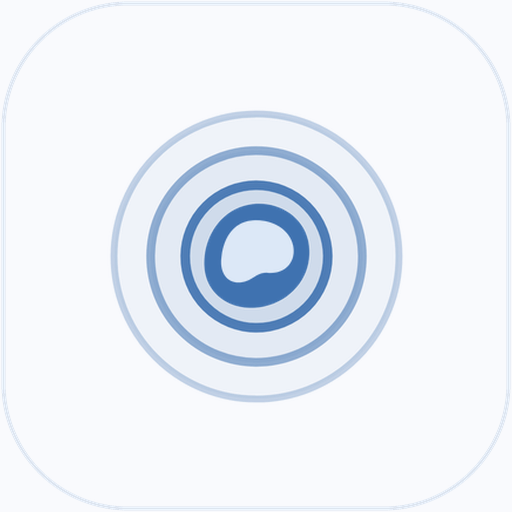

涟漪很多人备考时会装一个限制软件，过几天又自己关掉或卸载。涟漪（Ripple）把关掉规则这一步变慢：放宽规则要等 15 分钟，解锁码可以交给别人，卸载和强行停止都会被拦下。这页写的是备考期间的具体设置。
系统自带的屏幕使用时间和大多数限制软件，关掉只要点一下“忽略限制”或者输一次自己设的密码。复习累了的那几分钟，这一下很容易点下去。涟漪在放宽规则前加了 15 分钟等待，这段时间通常够让人回到书本上。如果你把解锁码交给室友或家长，自己就没有立即关掉的办法。
可以。涟漪按应用或页面单独拦截，你可以只限制抖音、快手、微信视频号和 YouTube Shorts，B 站、网课 App 和浏览器查资料照常使用。
放宽或关闭任何规则都要先等 15 分钟冷静期。也可以把紧急解锁码交给室友、家长或研友保管，自己不知道码就只能等冷静期结束。
可以给拦截规则设置时间段，比如每天 23:00 到第二天 7:00 拦截短视频和游戏。倒计时按开机后经过的时间计算，改系统时间不会提前结束。
Android 11 及以上在手机本机开启无线调试守护后，系统卸载开关会被锁住，被划掉或强行停止约 2.5 秒后自动恢复，不需要电脑，也不需要 Root。
能。家长在孩子手机上设置好规则，紧急解锁码由家长保存。微信可以只关视频号和朋友圈，孩子和家长、老师的聊天不受影响。